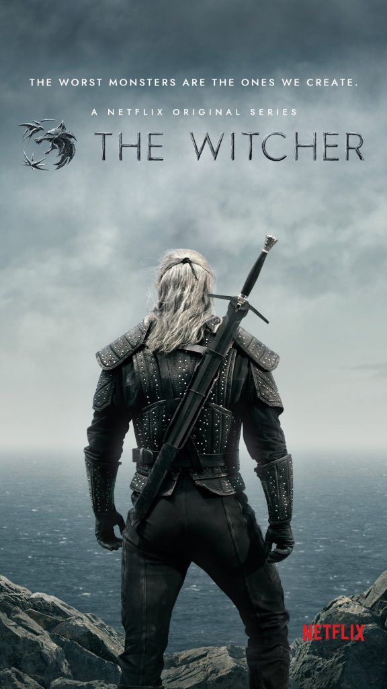

Friends
Assista o Trailer
Ross, Rachel, Mônica, Chandler, Joey e Phoebe formam um grupo de seis amigos que lutam para se sobressair e progredir na competitiva vida de Manhattan.
Seu humor inteligente e apoio mútuo incondicional fazem com sua amizade seja cada vez mais forte, superando assim todos os obstáculos que a vida lhes apresenta.
Trabalho, família, responsabilidade, dinheiro, sexo, compromisso e, sobretudo, amor e amizade, são alguns dos temas que preocupam e, ás vezes, divertem esses personagens.
Não foi à toa que o sofá do Central Perk, o café onde se reúnem para conversar, foi trocado duas vezes por excesso de uso. Esta série foi filmada por dez temporadas, conquistando um sucesso após o outro. Sua trilha sonora promocional, "I'll Be There for You" (Rembrandts), é tão famosa quanto o programa, pois a sua mensagem e o refrão definem perfeitamente o significado da existência da série.
Strangers Things
Assista o Trailer
Em 6 de Novembro, 1983 na pequena cidade de Hawkins, Indiana, o garoto de 12 anos, Will Byers desaparece misteriosamente.
A mãe de Will, Joyce, torna-se frenética e tenta encontrar Will enquanto o chefe de polícia Jim Hopper começa a investigar, e assim fazem também os amigos de Will: Dustin, Mike e Lucas.
No dia seguinte, uma menina psicocinética que sabe o paradeiro de Will é encontrada pelos meninos. À medida que eles descobrem a verdade, uma sinistra agência do governo tenta encobri-los, enquanto uma força mais insidiosa espreita logo abaixo da superfície.
The Witcher
Assista o Trailer
Em The Witcher, Geralt de Rivia (Henry Cavill) é um solitário caçador de monstros, que luta para encontrar seu lugar num mundo onde pessoas são mais crueis que criaturas.
Mas seu caminho irá cruzar com duas figuras que mudarão sua vida: a feiticeira Yennefer de Vengerberg (Anya Chalotra) e a princesa poderosa Cintran Ciri (Freya Allan).